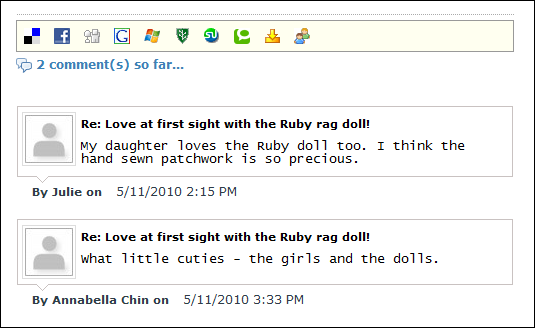

How to view comments associated with a blog entry on the Blog module. Note: You may not be authorized to view blog comments.

Note: The Comments link beside each blog entries indicates the number of approved comments for that entry. E.g.  Comments (0) represents no (0) comments, whilst
Comments (0) represents no (0) comments, whilst  Comments (8) indicates eight (8) comments.
Comments (8) indicates eight (8) comments.

Viewing Blog Comments